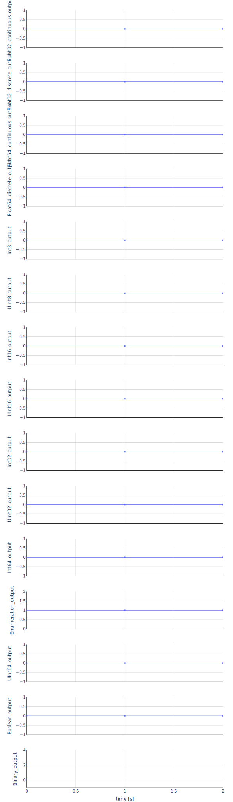

In order to reproduce the reference results the following parameters need to be set
Float64_fixed_parameter: 1
String_parameter: "FMI is awesome!"
and the input signals must be applied.
with the variables
| Variable | Start | Unit | Causality | Variability | Description |
|---|---|---|---|---|---|
| time | independent | continuous | |||
| Float32_continuous_input | 0 | input | continuous | ||
| Float32_continuous_output | output | continuous | |||
| Float32_discrete_input | 0 | input | discrete | ||
| Float32_discrete_output | output | discrete | |||
| Float64_fixed_parameter | 0 | parameter | fixed | ||
| Float64_tunable_parameter | 0 | parameter | tunable | ||
| Float64_continuous_input | 0 | input | continuous | ||
| Float64_continuous_output | output | continuous | |||
| Float64_discrete_input | 0 | input | discrete | ||
| Float64_discrete_output | output | discrete | |||
| Int8_input | 0 | input | discrete | ||
| Int8_output | output | discrete | |||
| UInt8_input | 0 | input | discrete | ||
| UInt8_output | output | discrete | |||
| Int16_input | 0 | input | discrete | ||
| Int16_output | output | discrete | |||
| UInt16_input | 0 | input | discrete | ||
| UInt16_output | output | discrete | |||
| Int32_input | 0 | input | discrete | ||
| Int32_output | output | discrete | |||
| UInt32_input | 0 | input | discrete | ||
| UInt32_output | output | discrete | |||
| Int64_input | 0 | input | discrete | ||
| Int64_output | output | discrete | |||
| UInt64_input | 0 | input | discrete | ||
| UInt64_output | output | discrete | |||
| Boolean_input | false | input | discrete | ||
| Boolean_output | output | discrete | |||
| String_parameter | Set me! | parameter | fixed | ||
| Binary_input | 666f6f | input | discrete | ||
| Binary_output | output | discrete | |||
| Enumeration_input | 1 | None | input | discrete | |
| Enumeration_output | None | output | discrete |
The plot shows the trajectories of the output variables computed with fmusim.
fmusim --interface-type me --solver cvode --output-interval 1 --output-file Feedthrough_out.csv Feedthrough.fmu